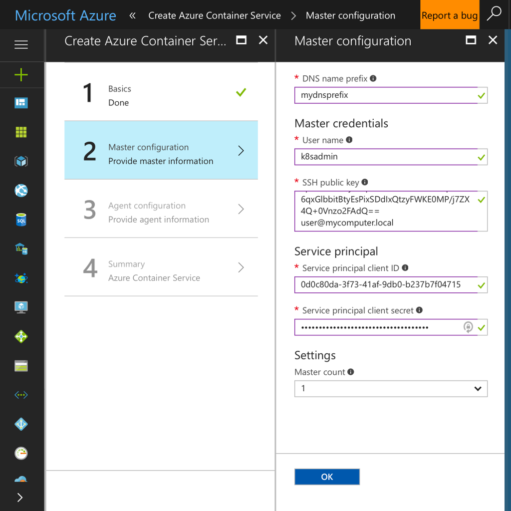

-

Workflow
The Kubernetes-native platform (v2).
-

Helm
The Package manager for Kubernetes.
-

Steward
The Kubernetes-native Service Broker.
-
You should be able to run the
azcommand, which is used to provision resources in the Azure cloud. Either install Azure CLI to your computer or open a Cloud Shell by clicking this icon near the upper right of the Azure Portal: -
You need an SSH key to deploy the Kubernetes cluster. For help, see Microsoft's documentation about creating SSH key pairs for Linux VMs on Azure.
- Orchestrator: Kubernetes
- Subscription: choose the Azure subscription to be charged for cloud resources
- Resource group: "Create new" with a unique name
- Location: choose one of Azure's worldwide datacenters
- DNS name prefix: the first section of the cluster's hostname
- User name: name of a unix user who will be added to all Kubernetes nodes
- SSH public Key: a public key to authenticate the unix user specified above
- Service principal client ID: the
appIdfield of the service principal - Service principal client secret: the
passwordfield of the service principal - Master count: number of Kubernetes masters for the cluster
- Agent count: number of Kubernetes nodes to create
- Agent virtual machine size: "Standard DS2" or better is recommended
- Operating system: Linux
Booting Kubernetes on Azure Container Service¶
Azure Container Service (ACS) is an optimized container hosting solution that works with all the open source tools you know. Azure is great for Kubernetes and Deis Workflow.
If you don't yet have a Microsoft Azure account, start a trial with $200 of free credit here.
Prerequisites¶
Configure the Azure CLI¶
If you use Cloud Shell, the az client command is already configured.
If you installed az locally, log in to your Azure account by typing az login at a command
prompt and complete the confirmation code process.
You can verify which account is active with the az account show command.
Note
Your Azure account needs ownership or contributor permissions on an Azure subscription.
If the subscription has 2FA enabled, your Azure account must have ownership credentials in order to create the service principal.
Create an ACS Kubernetes Cluster¶
Azure Container Service can create a Kubernetes cluster using either
the az command line or the Azure web portal.
Option 1: Command Line¶
Create a group to contain the ACS Kubernetes cluster resources. Export the resource group's name and location to environment variables for use by later commands:
$ # list worldwide datacenter locations so we can pick one
$ az account list-locations --query [].name --output tsv
$ export AZURE_DC_LOCATION=southcentralus # for example
$ export AZURE_RG_NAME=myresourcegroup
$ az group create --name "${AZURE_RG_NAME}" --location "${AZURE_DC_LOCATION}"Run the az acs create command to create your Kubernetes cluster, replacing the --dns-prefix
and --ssh-key-value arguments below with your values:
$ export AZURE_SERVICE_NAME=myacs
$ export AZURE_DNS_PREFIX=mydnsprefix
$ az acs create --resource-group="${AZURE_RG_NAME}" --location="${AZURE_DC_LOCATION}" \
--orchestrator-type=kubernetes --master-count=1 --agent-count=1 \
--agent-vm-size="Standard_D2_v2" \
--admin-username="k8sadmin" \
--name="${AZURE_SERVICE_NAME}" --dns-prefix="${AZURE_DNS_PREFIX}" \
--ssh-key-value @$HOME/.ssh/id_rsa.pubAzure Container Services immediately begins creating the Kubernetes cluster. After a few minutes, the command returns with information about the new deployment:
{
"id": "/subscriptions/a123b456-1234-1ab2-12ab-12345678abcd/resourceGroups/myresourcegroup/providers/Microsoft.Resources/deployments/azurecli1496357873.8344654",
"name": "azurecli1496357873.8344654",
"properties": {
"correlationId": "eae284bc-4380-484c-9302-f355e278c651",
"debugSetting": null,
"dependencies": [],
"mode": "Incremental",
"outputs": null,
...
},
"resourceGroup": "myresourcegroup"
}Your Kubernetes cluster on Azure is ready. Skip the next section and connect to the ACS Kubernetes cluster.
Option 2: Web Portal¶
Sign in to the Azure Portal and create a new Azure Container Service. Click on the + New link, then the Compute link, then Azure Container Service.

Select Resource Manager as the deployment model:

Then click the Create button.
Basics¶
Provide these Basics for a new Azure Kubernetes cluster:

Then click the OK button to move on to Master configuration.
Master configuration¶
First take a slight detour to create a service principal to access resources. Then supply the Master configuration options for your Kubernetes cluster:

When you are satisfied with your choices, click OK to move on to Agent Configuration.
Agent configuration¶
Choose Agent configuration options for your Kubernetes cluster:

When you are satisfied with your choices, click OK to move on to Summary.
Summary¶
Confirm the Summary of configuration choices for your Kubernetes cluster:

Click OK to tell Azure Container Services to start creating your new Kubernetes cluster. You can monitor the progress of the deployment on the Azure dashboard, or just wait for a notification that it has completed.
Your Kubernetes cluster on Azure is ready. Now make sure you can connect to the ACS Kubernetes cluster.
Connect to the ACS Kubernetes Cluster¶
kubectl is the Kubernetes command line client. If you don't already have it installed, you can install it with:
az acs kubernetes install-cliDownload the master kubernetes cluster configuration to the ~/.kube/config file by running the following command:
az acs kubernetes get-credentials --resource-group=$AZURE_RG_NAME --name=$AZURE_SERVICE_NAMENote: If the cluster was provisioned using any other SSH key than
/home/myusername/.ssh/id_rsathen the--ssh-key-fileparameter must be used pointing to the SSH key utilized to provision the cluster.
Verify connectivity to the new ACS Kubernetes cluster by running kubectl cluster-info
$ kubectl cluster-info
Kubernetes master is running at https://mydnsprefix.myregion.cloudapp.azure.com
Heapster is running at https://mydnsprefix.myregion.cloudapp.azure.com/api/v1/proxy/namespaces/kube-system/services/heapster
KubeDNS is running at https://mydnsprefix.myregion.cloudapp.azure.com/api/v1/proxy/namespaces/kube-system/services/kube-dns
kubernetes-dashboard is running at https://mydnsprefix.myregion.cloudapp.azure.com/api/v1/proxy/namespaces/kube-system/services/kubernetes-dashboardYou are now ready to install Deis Workflow